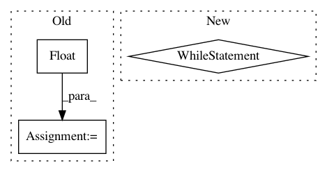

45714e343f36292cec938dc01ebb8a2dec10cea4,keras/preprocessing/image.py,ImageDataGenerator,flow,#ImageDataGenerator#Any#Any#Any#Any#Any#Any#Any#Any#,142
Before Change
np.random.seed(seed)
np.random.shuffle(y)
nb_batch = int(math.ceil(float(X.shape[0])/batch_size))
for b in range(nb_batch):
batch_end = (b+1)*batch_size
if batch_end > X.shape[0]:
nb_samples = X.shape[0] - b*batch_size
After Change
np.random.shuffle(y)
b = 0
while 1:
current_index = (b * batch_size) % X.shape[0]
if X.shape[0] >= current_index + batch_size:
current_batch_size = batch_size
else:
current_batch_size = X.shape[0] - current_index
bX = np.zeros(tuple([current_batch_size] + list(X.shape)[1:]))
for i in range(current_batch_size):
x = X[current_index + i]
x = self.random_transform(x.astype("float32"))
x = self.standardize(x)
bX[i] = x
if save_to_dir:
for i in range(current_batch_size):
img = array_to_img(bX[i], scale=True)
img.save(save_to_dir + "/" + save_prefix + "_" + str(i) + "." + save_format)
if current_batch_size == batch_size:
b += 1
else:
b = 0
yield bX, y[current_index: current_index + batch_size]
def standardize(self, x):
if self.featurewise_center:
x -= self.mean
if self.featurewise_std_normalization:
In pattern: SUPERPATTERN
Frequency: 3
Non-data size: 3
Instances
Project Name: keras-team/keras
Commit Name: 45714e343f36292cec938dc01ebb8a2dec10cea4
Time: 2016-01-19
Author: francois.chollet@gmail.com
File Name: keras/preprocessing/image.py
Class Name: ImageDataGenerator
Method Name: flow
Project Name: automl/auto-sklearn
Commit Name: 9260d6d1b6189335cca81903361befd32b4f739a
Time: 2015-10-01
Author: feurerm@informatik.uni-freiburg.de
File Name: ParamSklearn/components/classification/sgd.py
Class Name: SGD
Method Name: fit
Project Name: autorope/donkeycar
Commit Name: c4f4927e4f83fe5c5a98931a4b7201231fe46f16
Time: 2020-03-06
Author: jonathan@tsez.net
File Name: donkeycar/parts/robohat.py
Class Name: RoboHATController
Method Name: update